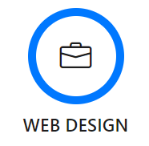
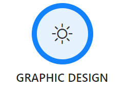
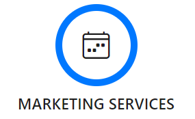

Crafting Comprehensive Solutions for Your Digital Success

Discuss your skills in graphic design, including the use of typography, color theory, and imagery to create visually engaging websites. Showcase your portfolio of designs to demonstrate your aesthetic sensibilities and creative flair.
Offer bespoke web development solutions tailored to the unique needs and goals of each client. Emphasize your ability to create custom websites from scratch, utilizing various technologies and frameworks.
From stunning landscapes to intricate details, each photograph reflects my keen eye for composition, lighting, and storytelling. Beyond mere aesthetics, I offer custom photography services tailored to complement web development projects.
Stress your commitment to creating websites that look and function seamlessly various devices and screen sizes, ensuring an optimal user experience on desktops, tablets, and mobile devices.

With a keen understanding of design principles and trends, I create visually stunning graphics that effectively communicate clients' messages and values. From concept development to final delivery, I collaborate closely with clients to ensure vision .

My comprehensive approach to marketing encompasses various strategies tailored to meet clients' specific goals and target audiences. From search engine optimization (SEO) to social media marketing, email campaigns, and content creation, I provide end-to-end solutions designed to drive traffic.